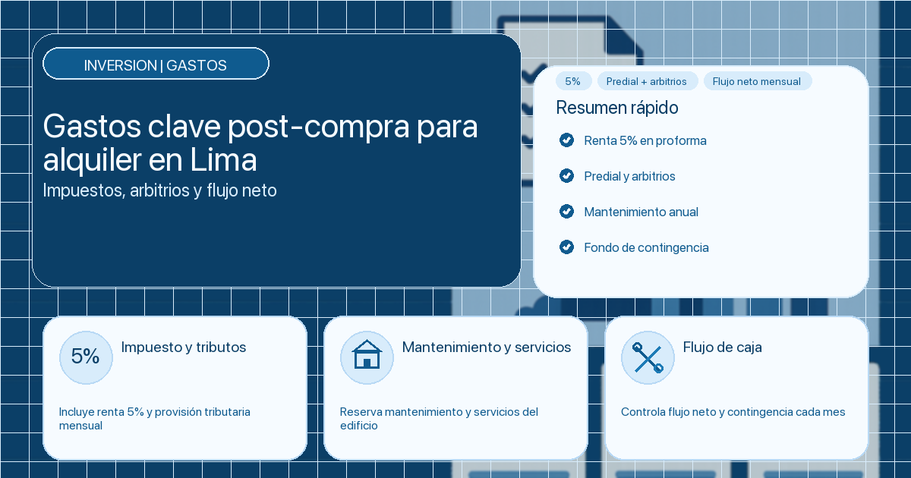

¿Qué gastos debes considerar después de comprar un departamento para alquilar en Lima?

Comprar un departamento para alquilar es una decisión frecuente en Lima, pero muchos propietarios calculan rentabilidad solo con dos variables: precio de compra y renta mensual. El problema es que, después de la compra, aparecen gastos recurrentes y obligaciones legales que afectan de manera directa el flujo neto.
Si esos costos no se presupuestan desde el inicio, el retorno real queda por debajo de lo esperado y la operación se vuelve tensa. En cambio, cuando se modelan bien, puedes tomar mejores decisiones de precio, contrato y administración.
Clave financiera: la rentabilidad real del alquiler se mide con caja neta después de gastos, no con ingreso bruto mensual.
Resumen rápido
- Impuesto a la renta: considera siempre el 5% mensual en tu proforma.
- Predial y arbitrios: son costos fijos que no debes subestimar.
- Mantenimiento: separa ordinario, extraordinario y contingencias.
- Control mensual: monitorea vacancia, cobro puntual y desvío de gastos.
Tabla de contenidos
1. Impuesto a la renta por alquileres
En Perú, los ingresos por alquiler de inmuebles se consideran renta de primera categoría. Esto implica el pago del 5% sobre la renta mensual, sin deducción de gastos operativos en el cálculo de ese tributo.
Este punto suele omitirse en simulaciones rápidas, y cuando eso ocurre se infla artificialmente la rentabilidad esperada. Además, incumplir puede generar multas e intereses que impactan directamente tu caja.
- Registra el impuesto como costo mensual fijo desde el mes 1.
- Inclúyelo en escenarios conservador/base/exigente.
- No esperes al cierre anual para regularizarlo.
Aplicación práctica: separa una provisión mensual específica para impuesto y evita usar ese monto como “caja disponible” de operación.
2. Arbitrios municipales e impuesto predial
Después de comprar, aparecen tributos municipales que deben entrar en tu presupuesto anual: impuesto predial y arbitrios. Aunque en algunos contratos puedes pactar pagos con el inquilino, la responsabilidad legal principal sigue siendo del propietario frente a la municipalidad.
Impuesto predial: se calcula por el valor del inmueble y se paga a la municipalidad distrital, generalmente en cuotas durante el año.
Arbitrios municipales: corresponden a limpieza pública, serenazgo, parques u otros servicios locales. El monto varía según distrito y características del predio.
- Proyecta predial y arbitrios por calendario anual.
- Define por contrato qué pago asume cada parte.
- Evita sorpresas de caja por vencimientos no previstos.
Aplicación práctica: incorpora estos tributos en tu flujo como costos predecibles y no como gastos “eventuales”.
3. Mantenimiento del edificio y servicios
El mantenimiento es uno de los rubros que más cambia entre inmuebles y, al mismo tiempo, uno de los que más afecta la rentabilidad neta. Por eso conviene separar claramente gasto ordinario y extraordinario.
Mantenimiento ordinario: limpieza, vigilancia, ascensores, áreas comunes y servicios periódicos del edificio. Dependiendo del contrato, puede asumirlo el inquilino, pero debe quedar explícito.
Cuotas extraordinarias: mejoras mayores o reposiciones relevantes (equipos, infraestructura, seguridad). Estas suelen recaer en el propietario porque protegen el valor del activo.
- Define fondo anual para mantenimiento correctivo.
- Monitorea incidencias por frecuencia y costo promedio.
- No mezcles extraordinarios con gasto mensual ordinario.
Aplicación práctica: cuando presupuestas mantenimiento con data histórica, reduces desvíos y decisiones reactivas.
4. Planificación del flujo de caja
La rentabilidad de un alquiler no depende solo de cuánto cobras, sino de cómo administras todo lo que sale mes a mes. La planificación de flujo de caja te permite anticipar tensión financiera y decidir con margen.
Una proforma útil para esta etapa debe incluir: impuesto 5%, predial, arbitrios, mantenimiento, vacancia esperada, costos de comercialización y reserva de contingencia.
- Escenario conservador: vacancia mayor y gastos altos.
- Escenario base: comportamiento promedio de mercado.
- Escenario exigente: mejor ocupación y control operativo.
Aplicación práctica: revisa trimestralmente la proforma y corrige precio o estrategia comercial antes de que se acumule el desvío anual.
Como complemento, revisa también gastos al invertir para alquilar y cómo fijar precio competitivo.
5. Importancia de una gestión profesional
Muchos propietarios detectan estos costos cuando ya están afectando su liquidez. Una gestión profesional permite anticipar, ordenar y controlar: desde el contrato y la cobranza hasta mantenimiento e incidencias.
Delegar no significa perder control; al contrario, significa operar con indicadores y trazabilidad en lugar de decisiones aisladas.
- Mejor visibilidad de costos reales del inmueble.
- Cobranza y seguimiento con procesos consistentes.
- Menor riesgo de incumplimientos y conflictos operativos.
- Reportes periódicos para decisiones de propietario.
Aplicación práctica: define KPIs de gestión (vacancia, puntualidad, costo por incidencia, renovación) y revísalos mensualmente.
Para profundizar, te puede ayudar administrador de departamentos en Perú y criterios para evaluar inquilinos.
Checklist de control para propietarios
Antes de considerar “rentable” tu inversión, valida esta lista:
- Impuesto a la renta incorporado en flujo mensual.
- Predial y arbitrios presupuestados por calendario.
- Mantenimiento ordinario y extraordinario separados.
- Proforma en escenarios conservador/base/exigente.
- Fondo de contingencia aislado de caja operativa.
- KPIs mensuales de vacancia y cobro puntual activos.
Si fallas en uno de estos puntos, el retorno proyectado puede no reflejar el desempeño real del inmueble.
Preguntas frecuentes
¿Qué impuesto se paga por alquilar un departamento en Perú?
La renta de primera categoría aplica una tasa de 5% sobre la renta mensual.
¿Quién paga arbitrios y predial en un alquiler?
Legalmente el propietario es responsable, aunque algunos pagos pueden pactarse en contrato con el inquilino.
¿Cómo evitar que los gastos se coman la rentabilidad?
Con proforma en escenarios, reserva de contingencia y control mensual de vacancia, cobranza y desvío de gastos.
Conclusión
Después de comprar un departamento para alquilar, la diferencia entre una operación ordenada y una operación estresante está en la calidad del control financiero. Impuestos, tributos, mantenimiento y vacancia no son detalles: son variables estructurales de rentabilidad.
Si modelas estos gastos desde el inicio y los sigues con disciplina mensual, tendrás decisiones más sólidas, menos sorpresas y mejor rendimiento neto en el tiempo.